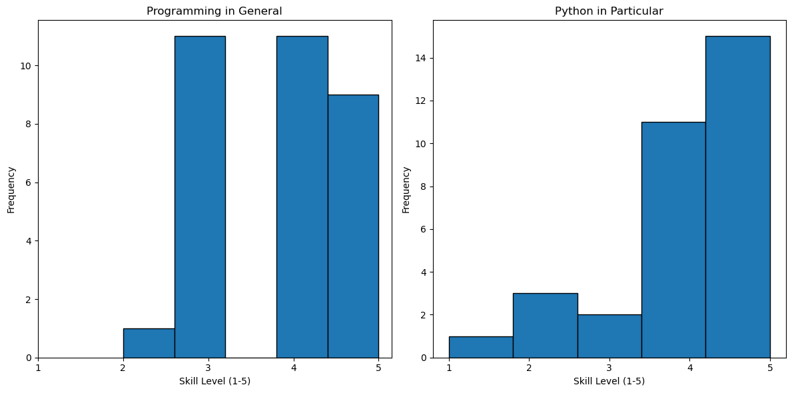
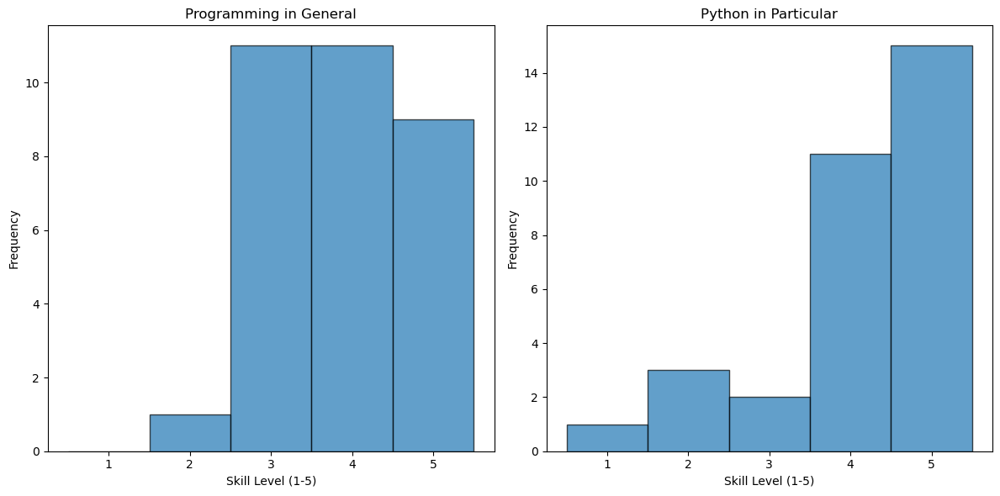
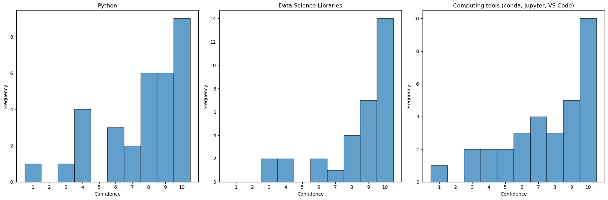
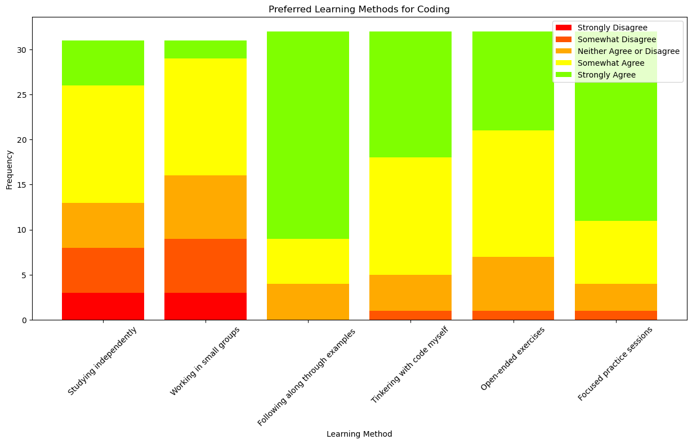

Code
# load libraries -- make sure to activate your eds 217 environment first!
import pandas as pd
import matplotlib.pyplot as plt# load libraries -- make sure to activate your eds 217 environment first!
import pandas as pd
import matplotlib.pyplot as plt# load in your data
df = pd.read_csv('../data/entry_survey_responses_2023.csv')
print(df.columns)Index(['In terms of programming in general, I consider myself to be',
'In terms of python in particular, I have',
'In terms of my confidence in my ability to use python programming language, I am:',
'In terms of my confidence with using python data science libraries, I am: ',
'In terms of my confidence with python computing tools such as conda, jupyter notebooks, and IDEs such as Visual Studio Code, I am:',
'I find that I learn coding best by [Studying independently]',
'I find that I learn coding best by [Working in small groups]',
'I find that I learn coding best by [Following along through examples ]',
'I find that I learn coding best by [Tinkering with code myself]',
'I find that I learn coding best by [Open-ended exercises]',
'I find that I learn coding best by [Focused practice sessions]'],
dtype='object')I wanted to make a some plots of the first two columns, so I asked chatGPT the following:
I have a pandas dataframe with the following two columns with numeric 1-5 values. Make histograms using matplotlib to visualize this data: “‘In terms of programming in general, I consider myself to be’, ‘In terms of python in particular, I have’”
It gave me the code below:
# Create the first histogram
plt.figure(figsize=(12, 6))
plt.subplot(1, 2, 1)
plt.hist(df['In terms of programming in general, I consider myself to be'], bins=5, edgecolor='black')
plt.title('Programming in General')
plt.xlabel('Skill Level (1-5)')
plt.ylabel('Frequency')
plt.xticks(range(1, 6))
# Create the second histogram
plt.subplot(1, 2, 2)
plt.hist(df['In terms of python in particular, I have'], bins=5, edgecolor='black')
plt.title('Python in Particular')
plt.xlabel('Skill Level (1-5)')
plt.ylabel('Frequency')
plt.xticks(range(1, 6))
# Show the plots
plt.tight_layout()
plt.show()
I didn’t like that the skill level wasn’t centered around the integers so I followed up with ChatGPT:
“the skill level is an integer value not continuous”
It responded with the following code modifications:
# Create histograms with bars centered at integers
plt.figure(figsize=(12, 6))
plt.subplot(1, 2, 1)
plt.hist(df['In terms of programming in general, I consider myself to be'], bins=[0.5, 1.5, 2.5, 3.5, 4.5, 5.5], edgecolor='black', alpha=0.7)
plt.title('Programming in General')
plt.xlabel('Skill Level (1-5)')
plt.ylabel('Frequency')
plt.xticks(range(1, 6))
plt.subplot(1, 2, 2)
plt.hist(df['In terms of python in particular, I have'], bins=[0.5, 1.5, 2.5, 3.5, 4.5, 5.5], edgecolor='black', alpha=0.7)
plt.title('Python in Particular')
plt.xlabel('Skill Level (1-5)')
plt.ylabel('Frequency')
plt.xticks(range(1, 6))
plt.tight_layout()
plt.show()

I liked these plots, but now I want to make similar graphs for the next three columns. Let’s see if we can adapt the code above to make that plot.
# Create histograms with bars centered at integers
plt.figure(figsize=(18, 6))
plt.subplot(1, 3, 1)
plt.hist(df['In terms of my confidence in my ability to use python programming language, I am:'], bins=[0.5, 1.5, 2.5, 3.5, 4.5, 5.5, 6.5, 7.5, 8.5, 9.5, 10.5], edgecolor='black', alpha=0.7)
plt.title('Python')
plt.xlabel('Confidence')
plt.ylabel('Frequency')
plt.xticks(range(1, 11))
plt.subplot(1, 3, 2)
plt.hist(df['In terms of my confidence with using python data science libraries, I am: '], bins=[0.5, 1.5, 2.5, 3.5, 4.5, 5.5, 6.5, 7.5, 8.5, 9.5, 10.5], edgecolor='black', alpha=0.7)
plt.title('Data Science Libraries')
plt.xlabel('Confidence')
plt.ylabel('Frequency')
plt.xticks(range(1, 11))
plt.subplot(1, 3, 3)
plt.hist(df['In terms of my confidence with python computing tools such as conda, jupyter notebooks, and IDEs such as Visual Studio Code, I am:'], bins=[0.5, 1.5, 2.5, 3.5, 4.5, 5.5, 6.5, 7.5, 8.5, 9.5, 10.5], edgecolor='black', alpha=0.7)
plt.title('Computing tools (conda, jupyter, VS Code)')
plt.xlabel('Confidence')
plt.ylabel('Frequency')
plt.xticks(range(1, 11))
plt.tight_layout()
plt.show()
Finally, I worked with ChatGPT to make a graph of the final questions on learning preferences. If you’re interested, you can see our full conversation here
df = df.iloc[:, -6:]
# Count the occurrences of each response for each method
counts = {}
for column in df.columns:
counts[column] = df[column].value_counts()
# Define possible responses and initialize counts
responses = ['Strongly Disagree', 'Somewhat Disagree', 'Neither Agree or Disagree', 'Somewhat Agree', 'Strongly Agree']
for column in df.columns:
for response in responses:
if response not in counts[column]:
counts[column][response] = 0
# Sort the response counts for consistency
for column in df.columns:
counts[column] = counts[column].loc[responses]
# Prepare data for stacked bar chart
short_labels = [s.split('[')[-1].rstrip(']') for s in counts.keys()] # Shorten the labels
data = {}
for response in responses:
data[response] = [counts[label].get(response, 0) for label in counts.keys()]
# Define gradient colors
gradient_colors = ['#FF0000', '#FF5500', '#FFAA00', '#FFFF00', '#7FFF00']
# Create the stacked bar chart
fig, ax = plt.subplots(figsize=(15, 7))
bottoms = [0] * len(short_labels)
for i, (response, values) in enumerate(data.items()):
ax.bar(short_labels, values, label=response, bottom=bottoms, color=gradient_colors[i])
bottoms = [i + j for i, j in zip(bottoms, values)]
# Add some text for labels, title, and axes ticks
ax.set_xlabel('Learning Method')
ax.set_ylabel('Frequency')
ax.set_title('Preferred Learning Methods for Coding')
ax.legend()
# Rotate x-axis labels to prevent overlap
ax.set_xticklabels(short_labels, rotation=45)
# Show the plot
plt.show()/var/folders/1f/_ptk0jz93h39qj25crwwtb0w0000gn/T/ipykernel_15649/2467521698.py:43: UserWarning: FixedFormatter should only be used together with FixedLocator
ax.set_xticklabels(short_labels, rotation=45)